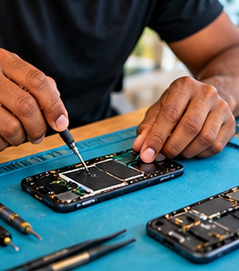

Téléphone et tablette : réparation et réglages
Écran cassé, batterie qui ne tient plus, stockage plein, nouveau téléphone à installer : on s’occupe de tout, photos et WhatsApp compris.
Smartphone & tablette dès 25 € · Devis gratuit · Prix annoncé avant

Votre téléphone est votre agenda, votre banque et vos souvenirs. Quand il lâche, tout s’arrête. Nous changeons les écrans et les batteries, libérons de la place, et transférons tout vers un nouveau téléphone : contacts, photos, WhatsApp, applications.
Idéal aussi pour les parents et grands-parents : nous réglons le téléphone pour qu’il soit simple à utiliser, avec les applications utiles et le texte plus grand.
Exemple : un nouveau téléphone pour une grand-mère du Robert
- Ancien téléphone plein à 92 %
- Peur de perdre les photos
- Nouveau téléphone encore dans sa boîte
- Tout transféré : photos, contacts, WhatsApp
- Texte agrandi, applications utiles
- Ancien téléphone vidé en sécurité
Pourquoi choisir IloTech
- Transfert complet, WhatsApp compris
- Réglages simples pour les seniors
- Écran et batterie remplacés
- Données protégées
Tarifs
Prix de départ, TVA non applicable, art. 293 B du CGI. Le prix exact est confirmé avant toute intervention. Paiement en 3 fois sans frais dès 500 €.
Smartphone & tablette
Réparation, transfert, réglages. Pièces (écran, batterie) en supplément : prix confirmé avant la réparation selon le modèle.
| Écran cassé (hors pièce) | +45 € |
| Batterie qui ne tient plus (hors pièce) | +25 € |
| Tombé dans l’eau : diagnostic | +25 € |
| Transfert vers un nouveau téléphone | +20 € |
| Sauvegarde des photos et contacts | +15 € |
| Configuration et applications | +15 € |
| Contrôle parental | +15 € |
Comment ça se passe
- Vous nous expliquez votre besoin en ligne, par WhatsApp ou par téléphone.
- Devis gratuit : le prix est annoncé avant, sans surprise.
- Rendez-vous à partir du lendemain, chez vous, en agence ou à distance.
- Intervention et suivi : on vous explique tout, et on reste joignable.
Questions fréquentes
Pouvez-vous transférer WhatsApp vers un nouveau téléphone ?
Oui, y compris d’un Android vers un iPhone (et inversement) dans la plupart des cas, avec vos discussions et photos.
Mon téléphone est plein, que faire ?
Nous trions et sauvegardons vos photos et vidéos, supprimons ce qui est inutile et réglons une sauvegarde automatique.
Combien coûte un changement d’écran ?
La main d’œuvre est indiquée ci-dessous ; la pièce dépend du modèle. Le prix total est annoncé avant.
Où intervenons-nous en Martinique ?
Nos agences de Ducos (0696 77 99 02) et du Robert (0696 48 26 78) couvrent toute l’île. Déplacement offert dès 200 € de prestation, gratuit en agence et à distance.
- Commune d'agence (déplacement offert) : Ducos, Le Robert
- Centre (déplacement 10 €) : Fort-de-France, Le Lamentin, Schœlcher, Saint-Joseph, Le François, Rivière-Salée, Saint-Esprit
- Sud (déplacement 20 €) : Les Trois-Îlets, Les Anses-d'Arlet, Le Diamant, Sainte-Luce, Rivière-Pilote, Le Marin, Sainte-Anne, Le Vauclin
- Nord (déplacement 25 €) : La Trinité, Le Gros-Morne, Sainte-Marie, Le Marigot, Le Lorrain, Basse-Pointe, Ajoupa-Bouillon, Macouba, Grand'Rivière, Le Morne-Rouge, Saint-Pierre, Le Prêcheur, Le Carbet, Bellefontaine, Case-Pilote, Le Morne-Vert, Fonds-Saint-Denis
Téléphone et tablette : réparation et réglages : parlons-en
Réponse rapide sur WhatsApp aux heures d’ouverture. Devis gratuit et sans engagement.
Nos autres services
- Dépannage informatique en Martinique
- Réparation d’ordinateur portable et fixe
- Virus, arnaques et comptes piratés
- Récupération de données et sauvegarde
- Coupures de courant : protégez votre matériel
- Vos parents accompagnés, chaque mois, à la maison
- Cours d’informatique pour seniors et débutants
- PC gamer et consoles
- Tous nos services et tarifs